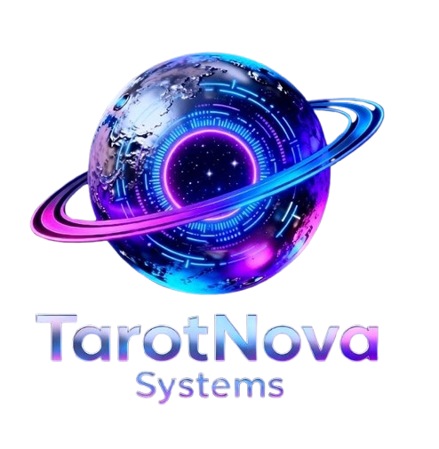

La tecnología puede guiarnos, pero el verdadero poder está en conocernos a nosotros mismos.
En la actualidad, muchos estudiantes se enfrentan a dificultades al elegir una carrera. La falta de orientación vocacional actual les impide identificar habilidades e intereses, provocando decisiones erróneas sobre su futuro profesional y social.
Proponemos al tarot como una herramienta innovadora de apoyo académico. Utilizamos la tecnología para procesar datos personales y rasgos conductuales, generando resultados claros que facilitan la toma de decisiones vocacionales.
Descubre cómo la interfaz procesa la información para guiar tu futuro.
Organiza la información en tablas relacionadas para evitar duplicación y optimizar las consultas de perfiles estudiantiles.
El usuario responde un test interactivo; las respuestas se almacenan y procesan para sugerir una carrera basada en personalidad y comportamiento.
La IA analiza las respuestas en tiempo real, cruzando datos de habilidades con áreas profesionales para generar sugerencias personalizadas de alta precisión.